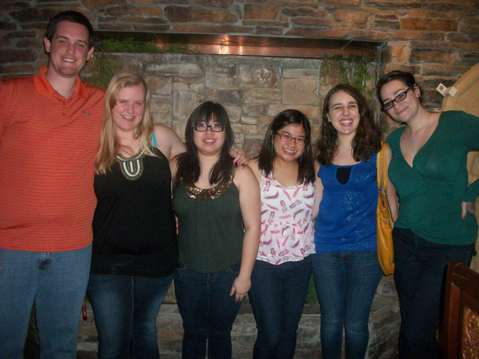
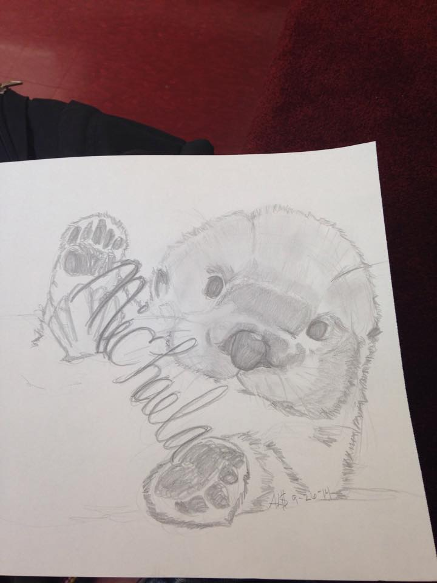

Welcome to my page! My name is Michaela Schuessler. I am a senior at California State University, Monterey Bay. I am graduating on May 20, 2017 with a Bachelor's degree in Business Administration with a concentration in International Business and a Pre-Law minor.
I am originally from Salinas, California. I have lived here my whole life. I was adopted when I was a baby. I have an older sister and an older brother. I grew up with my brother, which has made me very close to him.
I currently work two jobs and have another job lined up for the Fall season. My first job being the head coach for 16's girls power team for Club Cruz Volleyball Club. This job is only in the Spring time. My second job is as a Student Assistant for the College of Business at CSUMB. The job in the fall is working at York School as the Junior Varsity head coach for the girls volleyball team.
| Volleyball | Nursing | Hiking |
|---|---|---|


This is where you will find out a little more about my educational background in regards to high school and college.
I attended High School at a nonreligious private school in the Santa Cruz mountains. The school is called Mount Madonna School. Fun facts about MMS:
I chose to go to the University of the Pacific right out of high school. I attended here from 2011 to 2013. University of the Pacific is located in Stockton, California. Fun facts about the school:

I attended Monterey Peninsula College (MPC) from 2013 to 2015 when I graduated with my AA in Business Administration. Fun facts about the school:

I started attending California State University, Monterey Bay (CSUMB) in 2015, after I graduated from MPC. I am currently a senior and am planned to graduate on May 20, 2017! The mascot is a sea otter. Their colors are blue and green.
| Date Worked | Company | Position | Description |
|---|---|---|---|
| November 2016 - Present | CSUMB, College of Business | Student Assistant | Make appointments for the chair of business, handle student records, work on various projects, answer phone calls and emails. |
| November 2016 - Present | Club Cruz Volleyball | Head Coach for 16's girls team | Teach girls basic and advanced volleyball skills. Attend volleyball tournaments with the girls. |
| August 2016 - December 2016 | York School | Junior Varsity Head Coach | Taught high school girls the advanced volleyball skills. Took care of scheduling and driving the students to games. |
| June 2013 - August 2013 | Walmart | Cashier | Handle money, check people out, make sure the area around the cash register is clean, help with any questions, and bag items. |
| Class | College Taken At | Description | Skills Obtained By Class |
|---|---|---|---|
| Business Analytics Fundamentals (BUS 299) | CSUMB | Provides students foundational data analysis skills - how to model and solve analytical problems using Microsoft Excel and statistics to support business decisions. Topics include effective cell referencing, if-then modeling, built-in functions (statistical, financial, lookup, logical), chart design, transferring data across applications, and PivotTables. | Learned the basic skills of excel such as cell referencing, graphs, logical equations, etc. |
| Information Systems for Decision Making (BUS 308) | CSUMB | Designing Information Systems by applying quantitative and analytical concepts for decision making in business using advanced tools such as nested IFs, macros, database functions, VBA procedures, data visualization, and SAS. Students analyze data to create business intelligence by implementing complex spreadsheet-based information systems. | Learned how to use more complex skills through excel such as macro buttons, visual graphics, drop down lists, equations, etc. |
| Business Writing (BUS 304) | CSUMB | Enables upper division students to acquire & demonstrate critical thinking & business writing & speaking skills. Examines ethical & socially responsible behavior through case studies. Students learn & demonstrate empathetic written & oral communication skills, problem-solving strategies, & analytical skills applicable to real world business issues & events. | Helped me with my writing skills such as grammar, formatting, and proper citations. |
| Business Analytics (BUS 468) | CSUMB | Business Analytics (BA) uses technology to collect & analyze complex information for an organization for data-driven decision making. BA supports strategic & operational decision making by improving performance, optimizing customer relations, & monitoring business activity. Provides understanding of concepts of BA capabilities using data visualization, decision support systems (DSS), ethics & other topics. | Taught me how to use SAS and Tableau programming. Also taught me how to code. |
| Emerging Technology (BUS 460) | CSUMB | Explores emerging digital business models in enterprises including impact of new technologies such as social media, big data analytics and the Internet of Things. Students will develop an understanding of how these technologies provide strategic advantage. Explores issues such as security, privacy, encryption, and safeguarding of intellectual property rights, & ethical issues. | Taught me how to use HTML to create my own website. Also, taught me how to use DreamWeaver to create a website as well. |
| Entrepreneurship (BUS 310) | CSUMB | Focuses on the entrepreneurial process, opportunity recognition, entry strategies, market opportunities, business plan creation, financial projections, venture capital, debt & other forms of financing, external assistance for startups & small businesses, legal, tax, & ethical issues, intellectual property, franchising, & entrepreneurship economics. Internet & eCommerce examples are provided. | Learned how to write a full paper with the skills that I have learned throughout my whole college career at CSUMB. Put together an extensive paper. |
This section will talk about my friends, family, and my dog. It will also show some other fun photos that I love. At the end, there will be a quick survey.
Throughout my college years, I have made a lot of friends. All these people have made a huge impact on my life. Below are some pictures of the many friends that I have met and kept over the years.
I have always grown up being a big family person. Most of my family lives far away but when I get to see them, it is the best! Below are some pictures from many fun times.
I got Oddball when I was 10 years old. I have grown up with him my whole life. He is a sharpei-lab mix. He is definitely my pride and joy and I don't know what I would do without him. Below are some awesome pictures of my dog Oddball.